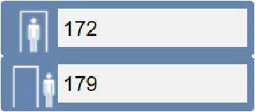
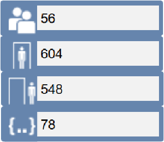

IEE Occupancy Tool Commands, Events, and Symbols
The following describes commands, events, and symbols of the IEE Occupancy Tool integration.
Commands
The IEE Occupancy Tool integration does not foresee any specific command.

For details about the SORIS adapter properties and commands, in SORIS, see Properties and Commands of SORIS thingAdapter Objects.
Events
The following are the specific IEE Occupancy Tool integration events:
- Current Occupancy Exceeded
- Number of Entries Exceeded
- Number of Exits Exceeded
These events are not enabled by default. You can enable each of them manually for a specific zone or for all zones. See Enabling the IEE Occupancy Tool Events.
Symbols
The Access _Device_IEE_Occupancy_Tool_150_HQ_1.gms library provides graphic symbols to display Sensors and Zones in Desigo CC graphics.
Sensor Symbol
DYN_2D_OT_Sensor_None_001_150 |
 |
|
Zone Symbol
DYN_2D_OT_Zone_None_001_150 |
 |
|